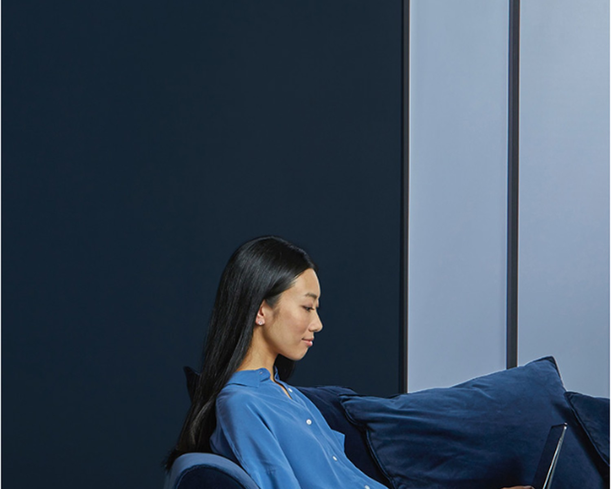

May 5, 2026 By Cross Sector بواسطة كروس سكتور Strategy الاستراتيجية
A closer look at how integrated expertise, clear strategy and cross-sector collaboration turn complex challenges into practical outcomes.
نظرة أقرب إلى كيفية تحويل الخبرات المتكاملة والاستراتيجية الواضحة والتعاون بين القطاعات إلى نتائج عملية قابلة للقياس.
Read more اقرأ المزيد
May 5, 2026 By Cross Sector بواسطة كروس سكتور Digital الرقمية
From customer journeys to operating models, digital transformation works best when technology is shaped around people, decisions and measurable value.
من رحلة العميل إلى نماذج التشغيل، ينجح التحول الرقمي عندما تُبنى التقنية حول الإنسان والقرار والقيمة القابلة للقياس.
Read more اقرأ المزيد
May 5, 2026 By Cross Sector بواسطة كروس سكتور People الإنسان
Strong cultures are designed intentionally. Trust, clarity and a shared sense of purpose create the conditions for teams to perform at their best.
الثقافات القوية لا تتشكل بالمصادفة؛ فالثقة والوضوح والهدف المشترك هي البيئة التي تمكّن الفرق من تقديم أفضل ما لديها.
Read more اقرأ المزيد
Sint vocibus est repudiare
الرؤية الواضحة تختصر الطريق إلى الأثر
May 5, 2026 By Cross Sector بواسطة كروس سكتور Insights الرؤى
The strongest ideas move faster when expertise, data and decision-makers are connected through one coherent view of the challenge.
تتحرك الأفكار الأقوى بشكل أسرع عندما تلتقي الخبرة والبيانات وصنّاع القرار ضمن رؤية واحدة متماسكة للتحدي.
Read more اقرأ المزيد
Mei ad ubique dictas qualisque, mea aliquam commune duis tempor sed.
أفضل القرارات تبدأ بسؤال أدق، ثم تتحول إلى أثر يمكن استدامته.
Cross Sector كروس سكتور

May 6, 2026 By Cross Sector بواسطة كروس سكتور Consulting الاستشارات
Specialized capability matters most when it is connected to context. We bring together the right disciplines around each challenge instead of forcing one formula on every case.
تزداد قيمة الخبرة المتخصصة عندما ترتبط بالسياق؛ لذلك نجمع التخصصات الأنسب حول كل تحدٍ بدلاً من فرض وصفة واحدة على كل حالة.
Read more اقرأ المزيد